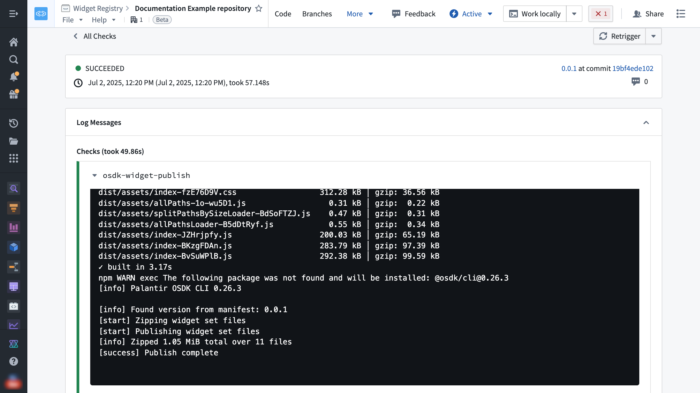

A widget set can be published through one of the following methods:
| Method | Use it when |
|---|---|
| Foundry CI/CD | The source code is in a Foundry Code Repository. A tag build automatically builds and publishes the widget set. |
@osdk/cli |
The source code is outside Foundry and you want to publish from a terminal or external CI/CD pipeline. |
| Manual upload | You need to upload a production build from the widget set page. |
Publishing a new widget set version does not update existing usages. To display the changes, configure each host application, such as Workshop, to use the new version.
CI/CD pipelines typically automate the build steps. Complete them manually when publishing from your local machine.
Before building locally, follow Develop on your local machine to configure the FOUNDRY_TOKEN environment variable. Then install dependencies, lint the project, and create a production build:
```bash tab="bash" npm install npm run lint npm run build
An example production build of a widget set in an output `dist/` folder looks like the following:
```text
dist/
âââ .palantir
â  âââ widgets.config.json
âââ assets
â  âââ allPaths-1o-wu5D1.js
â  âââ allPathsLoader-B5dDtRyf.js
â  âââ index-BKzgFDAn.js
â  âââ index-BvSuWPlB.js
â  âââ index-fzE76D9V.css
â  âââ index-JZHrjpfy.js
â  âââ splitPathsBySizeLoader-BdSoFTZJ.js
âââ index.html
A special .palantir/widgets.config.json manifest file describes the widgets contained in the build which is typically produced automatically from the project code using @osdk/widget.vite-plugin â when starting from project templates.
The version of the widget set to publish is included in this manifest file. When using @osdk/widget.vite-plugin, a foundry.config.json file in the project describes how the version is calculated in the widgetSet.autoVersion field. This may be package-json which reads the version field from package.json, or git-describe which calculates the version based on a git repository's tags and commits.
On your local machine, follow the instructions for building a project. Create a .zip archive file containing the production build of your widget set, ensuring that there are no additional folders (such as the output dist/ or equivalent folder).
The following code snippet creates an asset.zip archive file in the project root with the production build in a dist/ folder using a bash terminal. Any suitable zip tool can be used for your operating system.
```bash tab="bash" cd dist/ zip -r ../asset.zip .
Select **Upload release** on the widget set page. Drag the .zip archive into the dialog, and then select **Upload**.

## Publish with a CLI command from `@osdk/cli`
The npm package [`@osdk/cli` â](https://www.npmjs.com/package/@osdk/cli) creates the .zip archive and publishes it with a single command. You can also use the command in an external CI/CD pipeline.
To publish from a terminal on your local machine, follow the instructions for [building a project](#build-a-project).
Run the following CLI command from your terminal:
```bash tab="bash"
npx @osdk/cli@latest widgetset deploy
An example output for publishing a production build with the version 1.0.0 in the manifest will look like the following:
```bash tab="bash" â¹ Palantir OSDK CLI 0.26.3
â¹ Found version from manifest: 1.0.0 â Zipping widget set files â Publishing widget set files â¹ Zipped 1.04 MiB total over 11 files â Publish complete
To publish from an external CI/CD pipeline, follow the provider's documentation to set up the workflow steps to build the project and run the `@osdk/cli` deploy command.
## Use Foundry CI/CD to publish
For widget sets using Foundry Code Repositories, Foundry CI/CD is automatically set up to build and publish the widget set on tag builds.
To create and push a tag from a terminal, replace `<x.y.z>` with the widget set version and run:
```bash tab="Bash"
git tag <x.y.z>
git push origin <x.y.z>
To monitor the build, select Tags in VS Code Workspaces or Code Repositories, and then select the tag.
